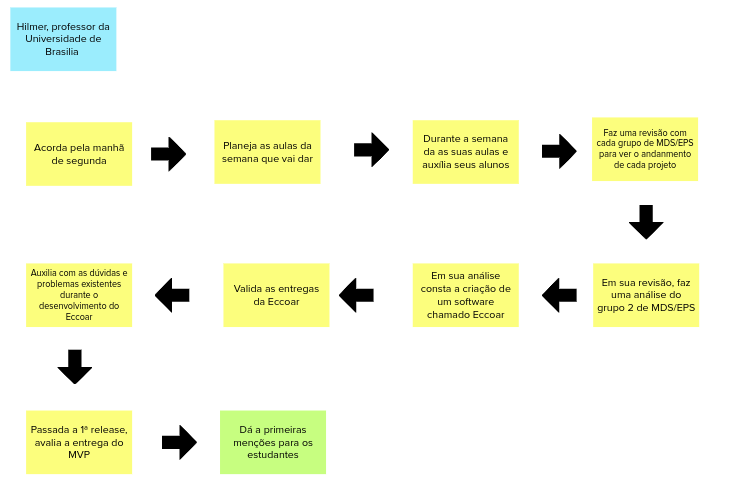
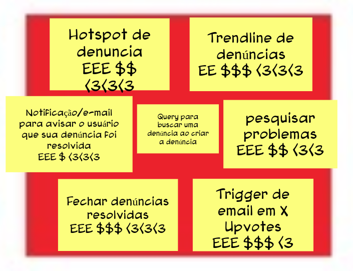
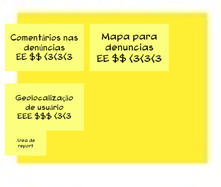
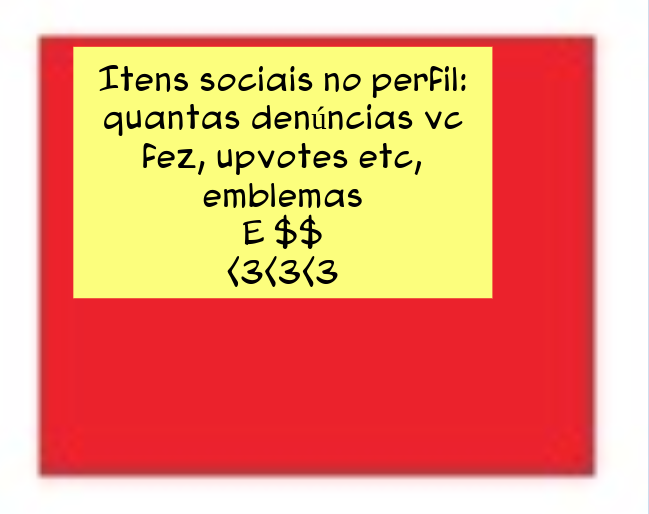
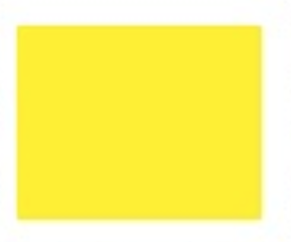
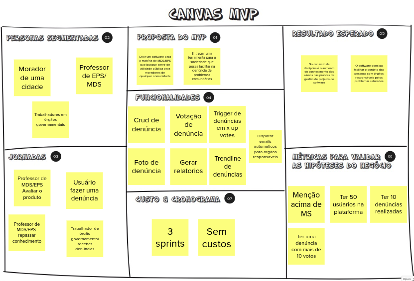

Lean Inception
Histórico de Revisão
| Autor | Mudanças | Data | Versão |
|---|---|---|---|
| Arthur Matos e Gabriel Sabanai | Documentação do Lean Inseption e Criação do documento | 05/03/2021 | 0.1 |
Visão do Produto
O intuito da visão de produto é difinir a essência do valor de negócio e refletir uma mensagem clara e convincente para o cliente.
| Para | Comunidades e seus moradores |
| Cujo | Problema se encontra na demora e burocracia na de resolução de problemas |
| O Eccoar | É um PWA de denúncias para problemas de natureza pública |
| Que | Visa aumentar visibilidade para os problemas e facilitar a comunicação entre o governo, orgãos responsáveis e o povo |
| Diferentemente da | Colab |
| O nosso produto | Coleta informações sobre o problema e os envia diretamente para o Estado, facilitando o relato de problemas. Assim, removendo a necessidade da comunidade se comunicar com orgãos públicos |
É, Não É, Faz, Não Faz
Esse tópico busca classificações sobre o produto seguindo as quatro diretrizes, indagando especificamente, cada aspecto positivo e negativo sobre o produto ser ou fazer algo.
| É | Não é | Faz | Não faz |
|---|---|---|---|
| Um app de denúncias | Rede social | Facilita a comunicação mandando denúncias para o orgão | Não faz transações monetárias |
| Ponte de comunicação entre a comunidade e orgãos responsáveis | chat com o órgão público | Faz com que as pessoas procurem verificar os problemas na comunidade | Não faz o governo se comunicar com o usuário |
| Crowdfunding | Agrupa denúncias no sentido de pegar as denúncias mais verificadas e confirmadas | Não faz a solução da sua comunidade | |
| Não é uma solução rápida | Mostra o andamento da resolução do problema | Não faz ads comerciais | |
| Não é uma api de emails | Mostra as denúncias no feed apenas por geolocalização a partir de um raio | ||
| Não é uma rede de notificação | Entra em contato com o orgão responsável | ||
| Não é uma garantia da solução do problema |
Objetivos de Negócio
Este tópico é um auxílio no levantamento e esclarecimento dos objetivos do produto.
| Engajar comunidade | Facilitar o relato de problemas | Buscar soluções às problemáticas | Dar visibilidade para os problemas |
|---|---|---|---|
| Incentivar o usuário a relatar problemas da comunidade | Reportar problemas comunitários | Mostrar os impactos de um problema na vida em comunidade para o governo | Filtrar os problemas por relevância, veracidade |
| Incentivar a comunidade a relatar os problemas | Retirar responsabilidade do usuário de comunicar com entidades governamentais | Relatar ao governo problemas existentes | |
| Facilitar o processo de denúncias | Encaminhar denúncias para os orgãos certos |
Personas
As personas tem o papel de criar uma representação realista de usuários, auxiliando o time a descrever funcionalidades do ponto de vista de quem vai interagir com o produto final.
Persona 1
| Persona | Perfil | Comportamento | Necessidades |
|---|---|---|---|
| Seu Zé | - 47 anos - Casado - Pai de 5 filhos - Dono de produção rural - Trabalhador |
- Usa a própria caminhonete a trabalho - Passa horas dirigindo - Conhece a cidade - Cauteloso por onde vai com a caminhonete de trabalho |
- Manutenção regular das vias - Manter as vendas para sustentar a família - Ter mais retorno dos impostos que paga |
Persona 2
| Persona | Perfil | Comportamento | Necessidades |
|---|---|---|---|
| Prof. Hilmer | - Casado - Professor da Universidade de Brasília |
- Leciona a matéria de métodos de desenvolvimento de software para os estudantes de Engenharia de Software - Leciona a materia de Engenharia de Produto de Software |
- Avaliar alunos da disciplina de MDS e EPS - Repassar o conhecimento da disciplina de uma forma clara e objetiva |
Persona 3
| Persona | Perfil | Comportamento | Necessidades |
|---|---|---|---|
| Maria | - 31 anos - Mãe de 1 filho |
- Principal fonte de renda da casa - Funcionária do DER -DF - É responsável por receber processos ligados a infraestrutura |
- Saber priorizar os processos a serem resolvidor primeiro - Facilitar na organização das denúncias feitas pro DER-DF - Reduzir seu estresse no trabalho para não descontar no filho e marido |
Jornada do Usuário
A jornada descreve o percurso de um usuário por uma sequência de passos para alcançar um objetivo. Alguns destes passos representar diferentes pontos de contato com o produto, caracterizando a interação da posson com ele.
As jornadas são referentes as numerações das respectivas personas anteriores.
Jornada 1

Jornada 2

Jornada 3

Brainstorm de Funcionalidades
O que é uma funcionalidade?
Uma funcionalidade representa uma ação ou interação de um usuario com o produto.
As funcionalidades elencadas a seguir foram frutos de uma brainstorm coletivo da equipe.

Revisão Técnica, de Negócio e UX
Este revisão tem o objetivo de discutir como a equipe se sente em relação ao entendimento técnico, O de negócio e o de UX para cada funcionalidade.
| COMO FAZER | versus | O QUE FAZER | |
|---|---|---|---|
/ |
Baixo |
Médio |
Alto |
Alto |
 |  |  |
Médio |
 |
 |  |
Baixo |
 |
Sequenciador
O Sequenciador de funcionalidades auxilia na organização e visualização das funcionalidades e da sequência de validação incremental do produto.
|

Canvas MVP
O Canvas MVP é um quadro visual que auxilia a equipe a alinhar e definir a estratégia do MVP, a versão mais simples do produto que pode ser disponibilizada para o negócio (produto minimo) e que possa ser efetivamente utilizado e validado pelo usuário final (produto viável).

Referências
- CAROLI, Paulo. Lean Inception: como alinhar pessoas e construir o produto certo.Local de publicação: Editora Caroli, 18 de set. de 2020.